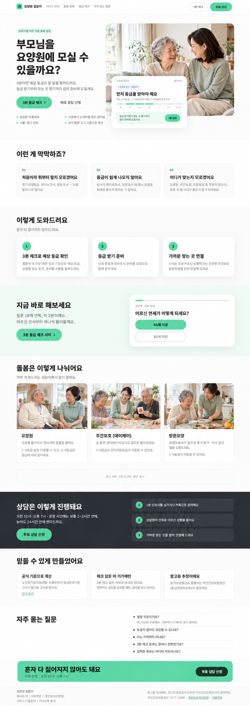
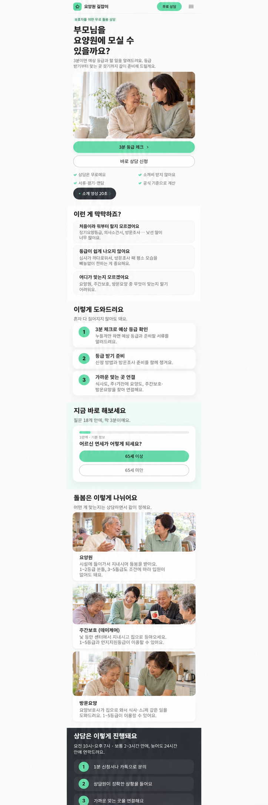

기존 흰색·민트색 디자인에 가족 히어로와 세 가지 돌봄 서비스 사진을 배치했습니다.이미지 생성 도구로 만든 배치 검토용 시안입니다. 모바일 이미지는 사진이 적용된 주요 구간을 보여 줍니다.


사진 배치: 첫 화면 가족 / 요양원 대화 / 주야간보호 활동 / 방문요양 식사 지원. 문구와 운영 정보는 실제 제작 시 원래 사이트의 확정 내용을 적용합니다.